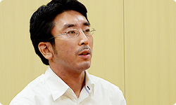
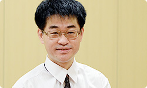
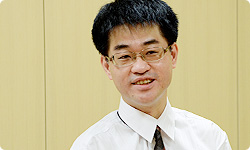

<div class="l-category-local-header">
<div class="category-local-header">
<div class="category-local-heading"><span>社長が訊く</span>
<div class="category-local-sub">IWATA ASKS


<div class="l-soft-topic-path is-block">
<div class="l-soft-topic-path-inner">
<div class="soft-topic-path">
<ul class="topic-path"><li class="topic-path-item"><span>『Wii U』 Wii U Chat篇</span></li></ul>


<div id="page-container">
<header class="interviewheader">
<h2 class="interviewheader__ttl"><span class="subtext">社長が訊く</span>『Wii U』</h2>

</header>
<div class="tabmenu-container">
<p class="tabmenu__ttl">シリーズ一覧
<ul class="tabmenu__body tabnum12">
<li class="tabmenu__item tab1">本体 篇</li>
<li class="tabmenu__item tab2">Wii U GamePad 篇</li>
<li class="tabmenu__item tab3">Miiverse プロデュース 篇</li>
<li class="tabmenu__item tab4">Miiverse 開発スタッフ 篇</li>
<li class="tabmenu__item tab5">インターネットブラウザー 篇</li>
<li class="tabmenu__item tab6">Wii U Chat 篇</li>
<li class="tabmenu__item tab7">New スーパーマリオブラザーズ U 篇</li>
<li class="tabmenu__item tab8">ZombiU（ゾンビU） 篇</li>
<li class="tabmenu__item tab9">Nintendo×JOYSOUND Wii カラオケ U 篇</li>
<li class="tabmenu__item tab10">Nintendo Land 篇</li>
<li class="tabmenu__item tab11">Nintendo TVii 篇</li>
<li class="tabmenu__item tab12">Wii Street U powered by Google 篇</li>
</ul>

<div class="hero-container">
<div class="hero__img">
<p class="hero__note">本文の一部を引用される場合は、必ず、本ページのURLを明記、<br>または本ページへのリンクをしていただくようお願いいたします。
<div class="interviewsubheader">
<div class="interviewsubheader__ttl"><h2>Wii U Chat篇</h2>

<div class="pageindex-container">
<p class="pageindex__ttl">目次
<ul class="pageindex__body">
<li class="pageindex__item active">1. １５年越しの想い</li>
<li class="pageindex__item">2. 「家族の幸せって、何だ？」</li>
<li class="pageindex__item">3. 気持ちを通じ合えるツールに</li>
</ul>

<div class="interview-container">
<h3 class="interview__ttl">1. １５年越しの想い</h3>

岩田
: 今日は、Wii Uに搭載されるビデオチャット機能、<br>いわゆるテレビ電話とも呼べる<br><span>『Wii U Chat』</span>について、お訊きします。<br>では、自己紹介からお願いします。


民谷
: ネットワーク事業部の民谷です。<br>『Wii U Chat』では、ディレクションを担当しました。




渡辺
: 技術研究部の渡辺です。<br>今回は『Wii U Chat』のライブラリー（※1）を担当しました。





※1ライブラリー＝ある特定の機能を持つプログラムを定型化して、ほかのプログラムが利用できるように部品化したもの。ライブラリーは単独で実行することはできず、ほかのプログラムの一部として動作する。


岩田
: 渡辺さんの所属している技術研究部は、<br>任天堂のハードをつくっている<br>総合開発本部の中にある、<br>とてもコンパクトな部署なんですけれど、<br>日々、将来ゲームに使えるかもしれない<br>いろんな要素技術の研究をしていて、<br>『Wii U Chat』はその一環でもあったんですよね。


渡辺
: はい、そうですね。


岩田
: この『Wii U Chat』が<br>どんないきさつではじまったのか、<br>おふたりの認識を教えてもらえますか？


渡辺
: まず、もともとテレビ電話的な機能というのは、<br>昔からずっと竹田（玄洋）さん（※2）が興味を持っておられて、<br>総合開発本部の中でも「いつか実装したい」と<br>考えていたものなんです。

※2竹田玄洋＝任天堂専務取締役、総合開発本部長。任天堂におけるハードウェア開発の責任者。過去、<span>「社長が訊く Wiiプロジェクト」のWiiハード編</span>、<span>Wiiリモコン編</span>、<span>社長が訊く『PUNCH-OUT!!』</span>、<span>社長が訊く『Wii U』本体篇</span>に登場。


岩田
: はい。じつはNINTENDO64（※3）の頃、<br>もう１５年以上前のことになりますが、<br>当時、わたしは任天堂の人ではなかったんですけど、<br>竹田さんからその想いを“直接”、<br>ぶつけられた記憶があります（笑）。<br>宮本（茂）さんの「こけし構想」（※4）と同じように<br>長い時間、竹田さんが粘り強く取り組んでいたテーマでした。

※3NINTENDO64＝１９９６年６月に任天堂より発売された家庭用ゲーム機。
※4「こけし構想」＝Wii『似顔絵チャンネル』で実現した、宮本の「自分や知り合いの顔をつくって、ゲーム上で活躍させる」という長年の構想。くわしくは、<span>開発スタッフが語る『似顔絵チャンネル』の話。</span>を参照。


渡辺
: それでWii Uの開発が進んで、<br>カメラを搭載する話が出てきたところで、<br>通信に関する技術的な検証を、ＮＴＤ（※5）や<br>アメリカのＶｉｄｙｏ（ヴィディオ）（※6）さんと行いました。<br>それで「これなら形にできそうだ」という話が<br>去年の年末くらいにまとまりました。

※5ＮＴＤ＝任天堂テクノロジーデベロップメント（Nintendo Technology Development Inc.）。米国ワシントン州を拠点にしたHoward Chengをリーダーとした技術開発グループ。
※6Ｖｉｄｙｏ（ヴィディオ）＝２００５年創業のアメリカのビデオ会議システムを専門としたメーカー。


岩田
: Wii U GamePadには内向きのカメラはあるけど、<br>外向きのカメラはないわけです。<br>「Wii U GamePadはテレビ電話的なソフトのことを<br>想定してつくられていた」ということですよね。<br>Ｖｉｄｙｏさんとはどういったご縁で<br>ご一緒することになったんですか？


渡辺
: Ｖｉｄｙｏさんはもともと、<br>業務用のビデオ会議システムを<br>メインで扱われている会社さんなんですけど、<br>竹田さんが以前からご存じの方が<br>働いておられたんです。


岩田
: 竹田さん、世界中にいろんな人脈をお持ちですが、<br>「竹田コネクション、ふたたび」ですね（笑）。<br>その採用されたＶｉｄｙｏさんの技術というのは<br>どういった点が優れているんですか？


渡辺
: わかりやすく言うと、<br>たとえばビデオチャットをしているとき、<br>ネットワークにトラブルがあったりすると、<br>映像に不自然なブロックノイズ（※7）が<br>入ったりしますよね。

※7ブロックノイズ＝デジタル画像に発生する、ブロック状に見えるノイズの一種。


岩田
: はい、ありますね。<br>インターネットは混雑などの度合いによって、<br>どの程度の速度とエラー率で相手にデータが届くかが<br>保証されておらず、動的に変化するものなんです。<br>ですから、回線が混み合ったり、調子が悪かったりすると、<br>普通の動画圧縮技術では、<br>ブロックノイズが入ったり、<br>映像が途切れたりしてしまうんですね。


渡辺
: それに対して、Ｖｉｄｙｏさんの技術ですと、<br>リアルタイムに回線状態を監視して<br>随時、適切なビットレートに切り替えて、<br>極力映像が途切れたりすることのないような通信方式を<br>特徴としていたんです。<br>これによって、ネットワーク上で何か問題が起きていたとしても、<br>見た目はちょっと解像度が落ちているくらいで、<br>違和感なく画が見られるというものなんです。<br>そこがやっぱり、大きなところだと思います。


岩田
: インターネット通信というものは環境が一定ではないので、<br>送り手側と受け手側のスピード差があったりすると、<br>データの一部が抜け落ちて届かなかったりすることがありますから、<br>どんな状況でも破綻しないように、<br>技術でカバーして実現されているわけですね。


渡辺
: はい。日本だけでしたら、最近は<br>ネットワーク環境がよいところが増えましたので、<br>あまり実感されないかもしれませんが、<br>海外だとまだ古い回線も残っていますので。<br>そういう環境の相手と通信しても、<br>一定の品質を保って、ビデオチャットができます。




岩田
: そこはぜひ、みなさん<br>海外に友達をつくって試してもらいたいですね。


渡辺
: あと、最初のマッチング以外では、<br>サーバーが関与しないように実装できるので、<br>世界中でたくさん使っていただいても<br>サーバー負荷が問題になりにくいＰ２Ｐ接続（※8）が実現できる<br>というのも、ポイントでした。

※8Ｐ２Ｐ接続＝Ｐ２Ｐは、「Peer-to-Peer communication」の略。サーバーで実際の通信データを経由せず、ユーザーの端末同士が直接やりとりする通信方法。接続確立にやや時間を要する完全Ｐ２Ｐ型、第三者の端末が介在するスーパーノード型など存在するが、『Wii U Chat』では接続確立までをサーバーが、それ以降は端末間で直接、というハイブリッド型を採用している。


岩田
: なるほど、そうでないと、サーバー維持に費用がかかってしまい、<br>無料でご提供できなくなってしまいますからね。<br>ところで、民谷さんが入ったのは<br>基礎技術が決まったあとからですか？


民谷
: そうですね。わたしは<br>ＮＯＡ（Nintendo of America）経由で<br>以前から任天堂とのつながりがあった<br>ＮＬＧ（Next Level Games）（※9）さんのチームが空いたので、<br>「何かできることはないか？」と話を受けていて、<br>「本体内蔵のビデオチャットはどうだろう」と<br>検討していたところだったんです。<br>その話がプロジェクトとしてマッチして、<br>正式に入っていった形になります。

※9ＮＬＧ（Next Level Games）＝ネクストレベルゲームズ（Next Level Games Inc.）。 カナダのバンクーバーに所在するゲームソフト開発会社。これまで、『スーパーマリオストライカーズ』 (ＧＣ)、『マリオストライカーズ チャージド』(Wii)、『PUNCH-OUT!! 』（Wii）の開発に携わり、現在、ニンテンドー3DSソフト『ルイージマンション2 』を開発中。


岩田
: このインタビューを読まれる方のために、<br>民谷さんがこの仕事の前に何を担当していたのか、<br>教えていただけますか？


民谷
: わたしはこの前に、ニンテンドー3DSの<br>“ニンテンドーゾーンビューア”（※10）という、<br>ニンテンドーゾーンのサービスを利用できる<br>ビューアを制作していました。

※10“ニンテンドーゾーンビューア”＝ニンテンドー3DSで、街の各所に設置された「ニンテンドーゾーン」のサービスを利用するためのビューアソフト。


岩田
: ニンテンドーゾーンビューアも、<br>じつは海外のスタッフと連携して<br>開発されたものなんですよね。


民谷
: はい。ＮＯＡの一部門である、<br>プロジェクトエンジニアリング部と一緒に<br>開発を進めました。


岩田
: 海外の方と一緒に仕事をするとなると<br>当然、言葉の壁はありますし、<br>文化の違いもありますから、<br>コミュニケーションが<br>たいへんだったんじゃないですか？


民谷
: そうですね。そういう意味では今回、<br>ニンテンドーゾーンビューアで<br>バイリンガルの技術者としてプログラム開発にかかわった<br>ＮＯＡのメンバーが、<br>コーディネイターとして開発チームに加わってくれたので、<br>その面ではかなり助けられました。


岩田
: そうは言っても、直接顔を合わせないと<br>意識が揃わないということもあって、<br>何度か向こうに出かけていましたよね。


民谷
: はい、３か月おきくらいに、向こうにしばらく滞在して<br>直接顔をつきあわせて、意識を揃える必要がありました。<br>出張の時に効率よく作業が進むということだけではなくて、<br>現地のチームのみなさんの性格や考えかたの癖みたいなものがわかって、<br>帰国後に、メールやテレビ会議でやりとりするときに<br>それが活きたように思います。<br>大げさかもしれませんが、気持ちの伝わりかたは、<br>メールと出張では、ものすごく違うんじゃないかと思っています。<br>テレビ電話会議は、ちょうどその中間にある感じですかね。


岩田
: ああ、それ、先日、<br>社長が訊く『Miiverse』開発スタッフ篇でも話をした<br><span>「メラビアンの法則」</span>そのものですね。<br>メールのような言語情報だけだと、<br>どうしても、気持ちは伝わりにくいものなんですよ。<br>その意味では、「テレビ電話」というのは、<br>もちろん、直接会うことにはかなわないですけど、<br>初対面の間柄でなければ、メールや電話よりも<br>はるかに気持ちが伝えあえるということを<br>民谷さんは実感しながら開発してきたんですね。


民谷
: はい、「顔を見ながら話すこと」の重要性は、<br>この仕事を通じて強く感じるようになりました。


岩田
: あと、このソフトの場合、<br>今回、ディレクターは日本人なんですが、<br>チームの大半が海外の人、ということもあって、<br>海外版を先につくって、<br>それをあとで日本版にローカライズするという、<br>普段と逆のつくりかたをしているんですよね。


民谷
: はい、英語から日本語へのローカライズは、<br>ＮＳＴ(Nintendo Software Technology)（※11）という、<br>ＮＯＡのそばにある子会社に協力いただいています。

※11ＮＳＴ(Nintendo Software Technology)＝任天堂 ソフトウェアテクノロジー（Nintendo Software Technology Corporation）。アメリカのワシントン州にある任天堂の開発子会社。


岩田
: 以前はハードと同時に開発を進めるときには<br>日本の任天堂内部で大部分の開発を担当していたんですが、<br>民谷さんの前回の経験を活かして、<br>以前なら社内でやっていたような仕事を<br>こうやって、たくさんのチームと協力して<br>実現したということになりますね。<br>ところで渡辺さん、Ｖｉｄｙｏさんの技術の<br>Wii Uへの移行は、<br>わりとスーッといったんですか？


渡辺
: いえ、最初はけっこう手間取りました。<br>ソフトウェアがモジュール（部品）化されていて、<br>Wii Uのライブラリーとして組み込みやすかったのですが、<br>それでも、業務用の技術ということで<br>ＰＣでの実績はありましたが、<br>ゲーム機は初めてということでしたので。


岩田
: ＰＣでは当たり前に存在するＯＳ（※12）の機能やライブラリーが、<br>ゲーム機ではそれほど充実して整備されていなかったりしますからね。<br>いわゆる「組み込み系システム」（※13）の<br>おもしろくて、難しいところですね。

※12ＯＳ＝コンピューターシステム全体を管理するソフトウェア。
※12「組み込み系システム」＝特定の機能を実現するためにあらかじめ組み込まれるコンピューターシステムのこと。ＰＣの汎用的なシステムと比べて、ゲーム機などの場合、ハードウェア独自のシステムを開発して組み込む必要がある。


渡辺
: そうですね。とくに開発初期は、<br>Wii UのＯＳであったり、<br>ネットワーク系の機能も<br>まだ完成型ではなかったりしたので。<br>今年に入って、実際に最適化して動かす部分に関しては、<br>東京のシリコンスタジオ（※14）さんにご協力いただきました。<br>それでなんとかこのスケジュールに<br>間に合わせることができた、という形になっています。

※14シリコンスタジオ＝シリコンスタジオ株式会社。ゲームコンテンツ向けのミドルウェアの開発を主軸とする開発会社。２０００年設立。


岩田
: きっとたぶん、<br>それらの作業をぜんぶ自前でやっていたら、<br>もっと時間がかかっているか、<br>もっと社内のソフト開発に影響が出ていますよね。<br>そういう意味では、<br>これまでのいろんなご縁と、人脈が活用された<br>仕事だったんでしょうね。


<li class="pagination-next"><span>2. 「家族の幸せって、何だ？」</span></li>
</ul>
<div class="listbtn-container">
<p class="listbtn__item">社長が訊く 一覧

